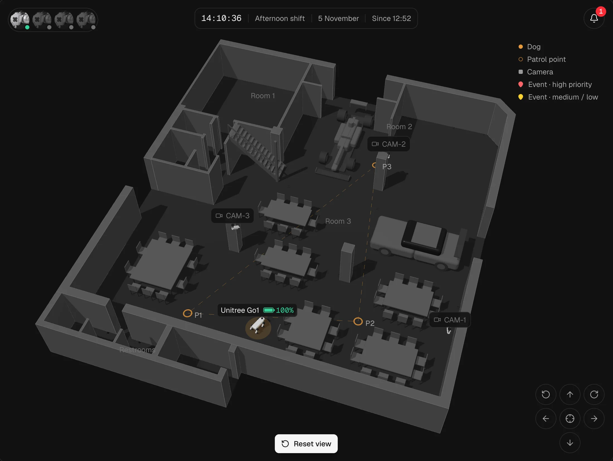
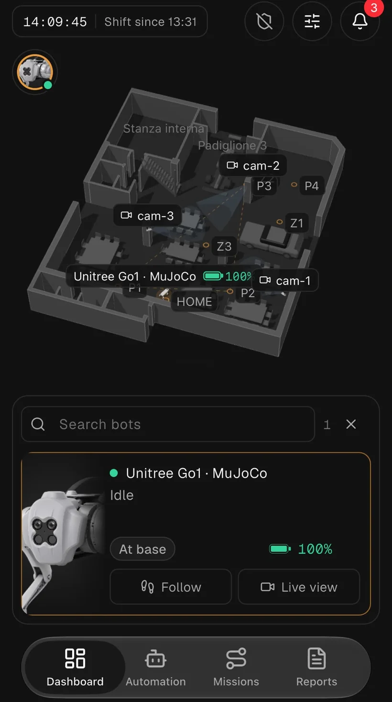
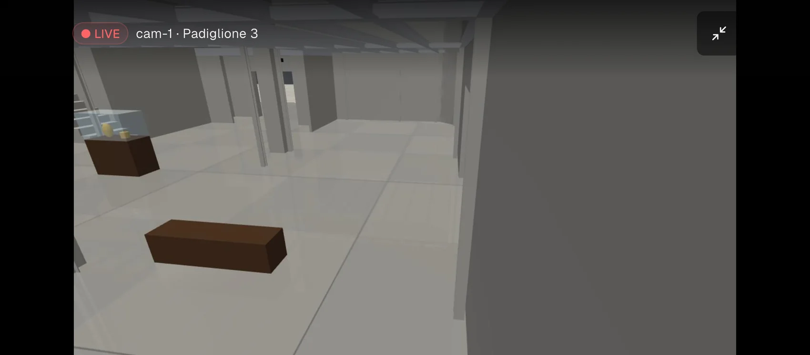
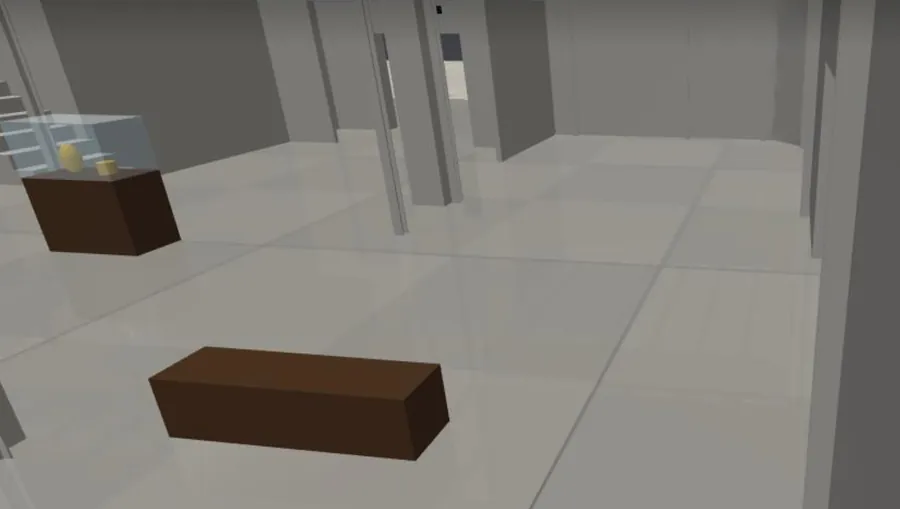
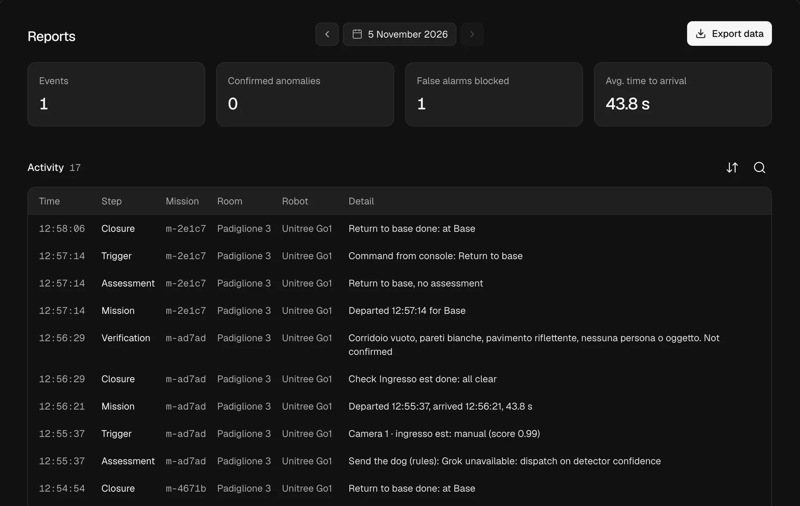

circa 1–2 s
Dalla telecamera
Grok guarda l'immagine e un ingrandimento del punto. Luci, ombre, riflessi e il tuo stesso cane si fermano qui. Un «no» passa dal parere del modello più forte.
Creato per il Grok Hackathon
Grok valuta l'immagine, il cane raggiunge il punto e l'allarme ti arriva dopo la verifica sul posto. Niente conferma, niente allarme.
Guarda come funziona
Un evento vero, dal registro
Un telefono fa da telecamera all'ingresso est. Ecco cosa è successo, riga per riga.
Camera 1 segnala l'evento e invia l'immagine.
Non aspetta la valutazione: guadagna tempo, e può sempre essere richiamato.
Il modello veloce di Grok propende per il falso allarme e chiede un secondo parere a quello più forte.
Conferma il falso allarme. In simulazione il cane controlla comunque; sul campo verrebbe richiamato.
Si ferma a un metro dal punto, rivolto verso l'ingresso.
Grok riguarda la scena e conferma la presenza di una persona.
Grok scrive il testo, il sistema lo manda sui canali attivi e tutto resta nel registro.
Prova del 5 novembre 2026: telefono vero su Camera 1, cane simulato in MuJoCo, modalità che controlla sempre sul posto. I tempi cambiano con la distanza e con i modelli.
circa 1–2 s
Grok guarda l'immagine e un ingrandimento del punto. Luci, ombre, riflessi e il tuo stesso cane si fermano qui. Un «no» passa dal parere del modello più forte.
circa 3–8 s
All'arrivo si guarda sul posto. Se non c'è nulla non parte nessun allarme: la missione si chiude e resta nel registro.
Tre modelli, ognuno con il suo compito. Se Grok non risponde, le regole prendono il suo posto e il sistema non si ferma.
La stessa console della scrivania, nell'app per iOS e Android.


Apri una pagina nel browser e tocca Start camera. Il rilevatore gira sul telefono, senza installare nulla.
Foto, testo chiaro e pulsanti per agire dal telefono. Arriva su Telegram, e puoi aggiungere SMS e chiamata vocale.

Allarme Presenza Non Autorizzata
Padiglione 3, Ingresso est, ore 13:35. Rilevata persona fuori zona rossa confermata. Rischio alto. Verificare subito presenza non autorizzata.
Rilevamento, valutazione, partenza, arrivo, verifica, allarme: ogni riga ha i suoi identificativi. A fine turno hai il report e il CSV.

Prova tutto in un museo fisico in MuJoCo, poi porta lo stesso sistema sul vero Unitree Go1.
Richiedi una demo